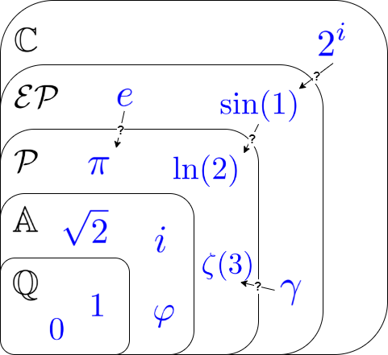
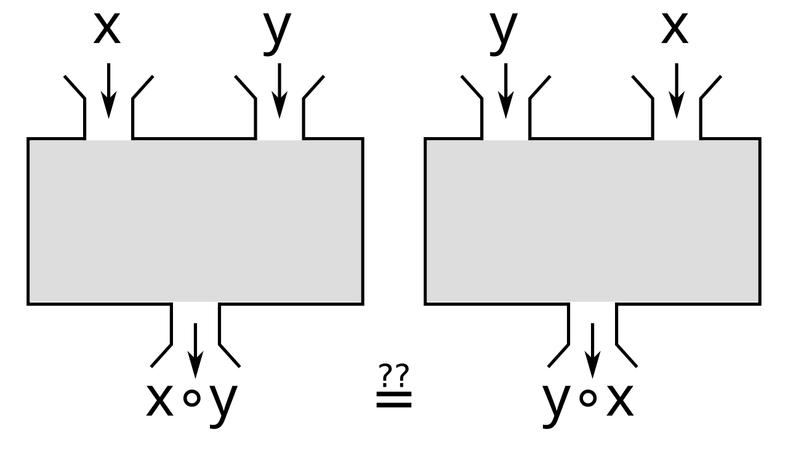
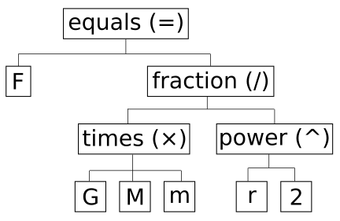
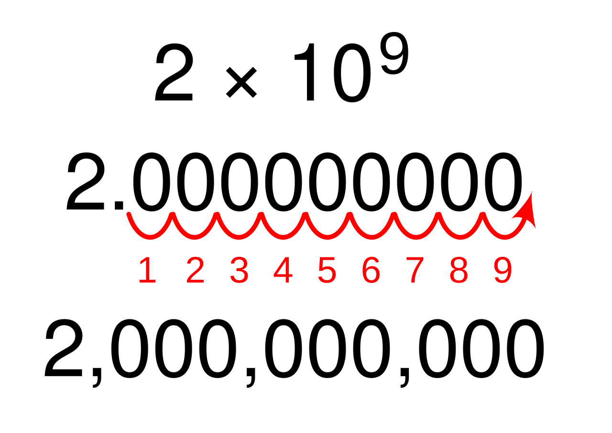

Real Numbers & Exponents
Almost everyone who struggles in algebra is not actually struggling with algebra — they are struggling with a handful of arithmetic rules that were taught quickly, years ago, and never revisited. This chapter goes back and sets those rules down carefully: what kinds of numbers exist, how they behave when you add and multiply them, what order operations happen in, and how exponents work. Nothing here is beyond you, and nothing here will be rushed. Every rule gets a reason, and every example gets worked out one visible step at a time. Get this chapter solid and the rest of algebra stops feeling like guesswork.
By the end of this chapter you can
- Name the natural, whole, integer, rational, irrational, and real numbers, and sort any given number into the right sets.
- Convert a repeating decimal into a fraction, and explain why that proves the number is rational.
- State and apply the commutative, associative, distributive, identity, and inverse properties by name.
- Explain why subtraction and division are not commutative or associative, and why division by zero is undefined.
- Evaluate any numerical expression using the correct order of operations, including signed numbers and grouping symbols.
- Apply the product, quotient, power, zero, and negative exponent rules, and state the restrictions each one carries.
- Write very large and very small numbers in scientific notation and multiply, divide, and add them.
Section 1The real number system

Start with counting, then notice what is missing
The first numbers anyone learns are the ones you count with: 1, 2, 3, 4, and onward forever. These are the natural numbers (often written N), sometimes called the counting numbers. They are enormously useful and badly incomplete. Try to count the sheep in an empty field and you need a number the naturals do not contain. Add zero and you have the whole numbers (W): 0, 1, 2, 3, and up.
Now try to record a temperature of eight degrees below zero, or a checking account that is 40 dollars overdrawn. You need numbers on the other side of zero. Attach the negatives and you have the integers (Z): …, −3, −2, −1, 0, 1, 2, 3, … Notice the pattern already forming. Each new set keeps everything the old set had and adds the piece that was missing. Every natural number is a whole number; every whole number is an integer. That nesting is exactly what the figure above is showing you.
Rational numbers: anything you can write as a fraction
Integers still cannot handle half a pizza. A rational number (Q, for quotient) is any number that can be written as a ratio of two integers — that is, as (a)/(b) where a and b are integers and b ≠ 0. That restriction is not decoration. Division by zero is undefined, so a denominator of zero is never allowed, and you will see that condition attached to fractions for the rest of your mathematical life.
Rationals are a bigger group than they first appear. Every integer is secretly a fraction: 7 = (7)/(1), and −12 = (−12)/(1). Every terminating decimal is a fraction: 0.25 = (25)/(100) = (1)/(4). And — this one surprises people — every repeating decimal is a fraction too. In decimal form, a rational number either stops or falls into a repeating block. There is no third option.
Irrational numbers, and the real number line
Some decimals never stop and never repeat. Those are the irrational numbers. The famous ones are √2 = 1.41421356…, π = 3.14159265…, and e = 2.71828182…, and none of them can be written as a fraction of two integers — that is a fact that can be proved, not just a failure to find the right fraction. Careful: √9 = 3 is perfectly rational. It is only the square roots that do not come out evenly that land in the irrational pile.
Put the rationals and the irrationals together and you get the real numbers (R) — every number that has a place on the number line, with no gaps anywhere. Every real number is exactly one point on that line, and every point on that line is exactly one real number. One last restriction worth knowing now: √−4 is not a real number, because no real number multiplied by itself gives a negative result. Even roots of negatives step outside the real number system entirely.
| Set | Symbol | What is in it | Examples | What it still cannot do |
|---|---|---|---|---|
| Natural | N | 1, 2, 3, 4, … | 7, 250 | No zero, no negatives, no fractions |
| Whole | W | 0, 1, 2, 3, … | 0, 19 | No negatives, no fractions |
| Integer | Z | …, −2, −1, 0, 1, 2, … | −12, 0, 45 | No fractions |
| Rational | Q | Any (a)/(b), a and b integers, b ≠ 0 | (3)/(4), −0.25, 0.666…, 8 | Cannot express √2 or π |
| Irrational | — | Decimals that never end and never repeat | π, √2, √10, e | Cannot be written as a fraction of integers |
| Real | R | All rationals and all irrationals together | Everything on the number line | Cannot express √−4 |
Worked example: turning a repeating decimal into a fraction
Here is the trick that proves repeating decimals are rational. Let us convert 0.727272… step by step, showing every line.
Step 1 — name the number. Let x = 0.727272…
Step 2 — shift the decimal past one full repeating block. The block "72" is two digits long, so multiply both sides by 102 = 100:
100x = 72.727272…
Step 3 — subtract the original equation from the new one. The infinite tails are identical, so they cancel:
100x − x = 72.727272… − 0.727272…
99x = 72
Step 4 — solve for x. Divide both sides by 99:
x = (72)/(99)
Step 5 — reduce. Both 72 and 99 are divisible by 9. 72 ÷ 9 = 8 and 99 ÷ 9 = 11, so
x = (8)/(11)
Step 6 — check. Divide 8 by 11 by hand: 8.000 ÷ 11 gives 0.7272… ✓ The original decimal comes back, so the answer is right. And since 8 and 11 are both integers with 11 ≠ 0, the number 0.727272… is rational — exactly as promised.
- The sets nest: natural ⊂ whole ⊂ integer ⊂ rational ⊂ real.
- A rational number is any (a)/(b) with integers a, b and b ≠ 0; in decimal form it terminates or repeats.
- An irrational number has a decimal that never ends and never repeats — π, e, and roots like √2 that do not come out evenly.
- The real numbers are all rationals plus all irrationals, filling the number line with no gaps; an even root of a negative is not real (√−4 has no real value), though odd roots such as the cube root of −8 do.
Section 2Properties of real numbers

Five rules you already use without naming
You have been using these properties for years without ever calling them by name. The reason to learn the names now is that textbooks, instructors, and test questions will ask you to justify a step, and "because that's how it works" is not an answer they accept. Each property is a promise about what you are allowed to rearrange without changing the value.
The commutative property says order does not matter: a + b = b + a, and a · b = b · a. The associative property says grouping does not matter: (a + b) + c = a + (b + c), and (ab)c = a(bc). The distributive property is the one that connects multiplication to addition: a(b + c) = ab + ac. It is the single most-used property in all of algebra, and it runs in both directions — expanding when you read it left to right, factoring when you read it right to left.
The identity properties name the two numbers that change nothing: a + 0 = a (zero is the additive identity) and a · 1 = a (one is the multiplicative identity). The inverse properties name the partner that undoes a number: a + (−a) = 0 (the opposite, or additive inverse) and a · (1)/(a) = 1 (the reciprocal, or multiplicative inverse) — and that second one carries a restriction, a ≠ 0, because (1)/(0) does not exist.
Where these properties do not apply
This is where careless work goes wrong. Commutative and associative apply to addition and multiplication only. Subtraction and division get neither. Check it yourself with real numbers: 8 − 3 = 5 but 3 − 8 = −5, so subtraction is not commutative. And 12 ÷ 4 = 3 but 4 ÷ 12 = (1)/(3), so division is not commutative either. Grouping fails the same way: (12 − 5) − 2 = 7 − 2 = 5, while 12 − (5 − 2) = 12 − 3 = 9. Same numbers, same order, different grouping, different answer.
There is a repair, though, and it is worth internalizing: rewrite subtraction as adding the opposite, and rewrite division as multiplying by the reciprocal. Once 8 − 3 becomes 8 + (−3), you are back in addition and all the addition properties return. This is why algebra teachers keep saying "subtraction is just addition in a costume."
| Property | Addition form | Multiplication form | Numerical check |
|---|---|---|---|
| Commutative | a + b = b + a | ab = ba | 4 + 9 = 9 + 4 = 13 |
| Associative | (a+b)+c = a+(b+c) | (ab)c = a(bc) | (2·5)·3 = 2·(5·3) = 30 |
| Distributive | a(b + c) = ab + ac | 6(10 + 3) = 60 + 18 = 78 | |
| Identity | a + 0 = a | a · 1 = a | −7 + 0 = −7; −7 · 1 = −7 |
| Inverse | a + (−a) = 0 | a · (1)/(a) = 1, a ≠ 0 | 5 + (−5) = 0; 5 · (1)/(5) = 1 |
Worked example: naming every property in a simplification
Simplify 3(2x − 5) + 4x, and justify each step by name.
Step 1 — rewrite the subtraction as adding the opposite so the distributive property applies cleanly:
3(2x − 5) + 4x = 3 [ 2x + (−5) ] + 4x
Step 2 — distribute the 3 across both terms (distributive property):
= 3(2x) + 3(−5) + 4x
Step 3 — do the arithmetic inside each product. 3 · 2 = 6, and 3 · (−5) = −15:
= 6x + (−15) + 4x
Step 4 — move 4x next to 6x (commutative property of addition):
= 6x + 4x + (−15)
Step 5 — group the like terms (associative property of addition):
= (6x + 4x) + (−15)
Step 6 — factor out the x (distributive property, read right to left):
= (6 + 4)x + (−15)
Step 7 — finish the arithmetic. 6 + 4 = 10, and "+ (−15)" is written as "− 15":
= 10x − 15
Check with a number. Let x = 2. Original: 3(2·2 − 5) + 4·2 = 3(4 − 5) + 8 = 3(−1) + 8 = −3 + 8 = 5. Simplified: 10(2) − 15 = 20 − 15 = 5. ✓ They match, so the simplification is trustworthy.
The distributive property as a mental-math shortcut
Watch how much work the distributive property saves. To compute 7 × 98 without a calculator, notice that 98 = 100 − 2:
7 × 98 = 7(100 − 2) = 7(100) − 7(2) = 700 − 14 = 686
That is the same property you will use to expand 7(x − 2) into 7x − 14. Numbers and variables obey identical rules — that is really the whole idea behind algebra.
- Commutative = order can change; associative = grouping can change. Both apply to addition and multiplication only.
- Distributive, a(b + c) = ab + ac, is the workhorse — it expands one way and factors the other.
- Identities: 0 for addition, 1 for multiplication. Inverses: −a for addition, (1)/(a) for multiplication with a ≠ 0.
- Rewrite subtraction as adding the opposite and division as multiplying by the reciprocal to get the properties back.
Section 3Order of operations

Why an order is needed at all
Take the expression 2 + 3 × 4. Add first and you get 5 × 4 = 20. Multiply first and you get 2 + 12 = 14. Both are defensible readings, and that is intolerable — an expression has to mean one thing. So mathematicians agreed on a fixed order, and everyone from your calculator to a spacecraft's flight software follows it. The correct value is 14, because multiplication outranks addition.
The agreed order is often remembered as PEMDAS: Parentheses, Exponents, Multiplication and Division, Addition and Subtraction. But that acronym misleads thousands of students every year, so read the next sentence twice. Multiplication and division sit on the same level and are done left to right as they appear; addition and subtraction sit on the same level and are also done left to right. PEMDAS has four levels, not six.
| Level | What you do | Direction | Watch out for |
|---|---|---|---|
| 1. Grouping | Parentheses, brackets, and hidden groupers: fraction bars, radicals, absolute value | Innermost first | A fraction bar groups the whole top and the whole bottom |
| 2. Exponents | Powers and roots | Right to left when powers are stacked | −32 is not the same as (−3)2; a stacked 232 means 29 = 512, not 82 = 64 |
| 3. Multiply / Divide | Both, at the same rank | Left to right | 8 ÷ 2 × 4 is 16, not 1 |
| 4. Add / Subtract | Both, at the same rank | Left to right | 10 − 4 + 3 is 9, not 3 |
Signed numbers, carefully
Most order-of-operations mistakes are really sign mistakes. Four rules cover nearly everything. When you multiply or divide, same signs give a positive and different signs give a negative: (−6)(−7) = 42, but (−6)(7) = −42. When you add two numbers with the same sign, add their sizes and keep the sign: −5 + (−8) = −13. When you add two numbers with different signs, subtract the smaller size from the larger and keep the sign of the larger: −9 + 4 = −5. And subtracting is adding the opposite: 6 − (−4) = 6 + 4 = 10.
Then there is the single most common exponent-with-signs trap. In −32, the exponent attaches only to the 3, so you square first and negate second: −32 = −(3 · 3) = −9. In (−3)2, the parentheses make −3 the base, so (−3)2 = (−3)(−3) = 9. Those two expressions differ by more than a sign — they are different questions.
| Expression | What the base is | Work | Value |
|---|---|---|---|
| −32 | 3 (the minus is applied after) | −(3 · 3) | −9 |
| (−3)2 | −3 | (−3)(−3) | 9 |
| (−3)3 | −3 | (−3)(−3)(−3) = 9 · (−3) | −27 |
| −33 | 3 | −(3 · 3 · 3) | −27 |
Worked example: a full expression, one step at a time
Evaluate 8 + 3(7 − 2 · 5)2 ÷ 9 − (−4). Nothing gets skipped.
Step 1 — work inside the parentheses first. Inside, multiplication outranks subtraction, so 2 · 5 = 10:
= 8 + 3(7 − 10)2 ÷ 9 − (−4)
Step 2 — finish inside the parentheses. 7 − 10 = −3:
= 8 + 3(−3)2 ÷ 9 − (−4)
Step 3 — exponents. The base is −3 because of the parentheses, and (−3)(−3) = 9:
= 8 + 3 · 9 ÷ 9 − (−4)
Step 4 — multiplication and division, left to right. The leftmost is 3 · 9 = 27:
= 8 + 27 ÷ 9 − (−4)
Step 5 — continue left to right. 27 ÷ 9 = 3:
= 8 + 3 − (−4)
Step 6 — addition and subtraction, left to right. 8 + 3 = 11:
= 11 − (−4)
Step 7 — subtracting a negative is adding a positive. 11 + 4 = 15.
Notice how much of the difficulty lived in Steps 3 and 7 — the two places signs mattered. That is typical.
Worked example: substituting values into an expression
Evaluate b2 − 4ac when a = 2, b = −5, and c = −3. (You will meet this exact expression again as the discriminant of the quadratic formula.)
Step 1 — substitute, and put every negative value in parentheses. This one habit prevents most sign errors:
b2 − 4ac = (−5)2 − 4(2)(−3)
Step 2 — exponents first. (−5)(−5) = 25:
= 25 − 4(2)(−3)
Step 3 — multiply left to right. 4 · 2 = 8:
= 25 − 8(−3)
Step 4 — keep multiplying. 8 · (−3) = −24:
= 25 − (−24)
Step 5 — subtract the negative. 25 + 24 = 49.
Worked example: the fraction bar as a grouping symbol
Evaluate (4 − 2(−3))/((−1)2 + 4). A fraction bar silently wraps parentheses around the entire numerator and the entire denominator, so both must be finished before you divide.
Step 1 — numerator, multiplication first. 2(−3) = −6, so the numerator is 4 − (−6) = 4 + 6 = 10.
Step 2 — denominator, exponent first. (−1)2 = (−1)(−1) = 1, so the denominator is 1 + 4 = 5.
Step 3 — now divide. (10)/(5) = 2.
Before dividing, always confirm the denominator is not zero. Here it is 5, so the expression is defined. If a denominator ever works out to 0, the expression is undefined and there is no value to report.
- Order: grouping → exponents → multiply/divide → add/subtract — four levels, not six.
- Multiplication/division and addition/subtraction are each done left to right, not in acronym order.
- Fraction bars, radicals, and absolute-value bars are invisible parentheses.
- −a2 squares first and negates second; (−a)2 squares the negative. Put substituted negatives in parentheses every time.
Section 4Integer exponents

What an exponent actually abbreviates
An exponent is nothing but repeated multiplication written compactly. In a5, the number a is the base and 5 is the exponent or power, and it means a · a · a · a · a — five factors of a. Every exponent rule you are about to learn can be rediscovered by writing out the factors and cancelling. That is worth knowing, because it means you never have to memorize a rule you cannot reconstruct.
Watch the product rule appear on its own. Take a3 · a2 and expand: (a · a · a)(a · a) = a · a · a · a · a = a5. Three factors plus two factors is five factors, so am · an = am+n. You add exponents when multiplying like bases — and note "like bases" is required. a3 · b2 cannot be combined at all.
The zero and negative exponent rules are not arbitrary
Students are often told "anything to the zero power is 1" with no explanation, and it feels like a made-up rule. It is not. Compute (23)/(23) two different ways. By plain arithmetic, (8)/(8) = 1. By the quotient rule, 23−3 = 20. Both answers describe the same quantity, so 20 = 1. The same argument works for any nonzero base, which is exactly why the rule carries the restriction a ≠ 0 — 00 is undefined, because the argument would require dividing 0 by 0.
Negative exponents come from the same move. Compute (23)/(25) both ways. Arithmetic: (8)/(32) = (1)/(4). Quotient rule: 23−5 = 2−2. So 2−2 = (1)/(4) = (1)/(22). In general a−n = (1)/(an) with a ≠ 0. Say this out loud once and it will stick: a negative exponent does not make a number negative — it moves the factor to the other side of the fraction bar. So 2−3 = (1)/(8), a positive number, and (1)/(x−4) = x4.
| Rule | Statement | Restriction | Example |
|---|---|---|---|
| Product | am · an = am+n | Same base | x4 · x6 = x10 |
| Quotient | (am)/(an) = am−n | a ≠ 0 | (x9)/(x2) = x7 |
| Power of a power | (am)n = amn | a ≠ 0 if either exponent is negative | (x3)5 = x15 |
| Power of a product | (ab)n = anbn | a, b ≠ 0 if n is negative | (3x)2 = 9x2 |
| Power of a quotient | ((a)/(b))n = (an)/(bn) | b ≠ 0 | ((x)/(2))3 = (x3)/(8) |
| Zero exponent | a0 = 1 | a ≠ 0 | (−5)0 = 1, but −50 = −1 |
| Negative exponent | a−n = (1)/(an) | a ≠ 0 | 3−2 = (1)/(9) |
Worked example: simplifying with negative exponents
Simplify (12x5y−3)/(3x−2y4) and write the answer with positive exponents only. State any restrictions.
Step 0 — state restrictions before you touch anything. The variables sit in denominators (and y−3 is itself a denominator in disguise), so we need x ≠ 0 and y ≠ 0. Everything below assumes that.
Step 1 — separate the expression into number, x, and y pieces:
= (12)/(3) · (x5)/(x−2) · (y−3)/(y4)
Step 2 — divide the numbers. 12 ÷ 3 = 4:
= 4 · (x5)/(x−2) · (y−3)/(y4)
Step 3 — apply the quotient rule to x. Subtract the exponents, and be careful with the double negative: 5 − (−2) = 5 + 2 = 7:
= 4x7 · (y−3)/(y4)
Step 4 — apply the quotient rule to y. −3 − 4 = −7:
= 4x7y−7
Step 5 — clear the negative exponent by moving that factor to the denominator:
= (4x7)/(y7) for x ≠ 0, y ≠ 0
Check with numbers. Let x = 1 and y = 2. Original: (12 · 1 · 2−3)/(3 · 1 · 24) = (12 · (1)/(8))/(3 · 16) = (1.5)/(48) = 0.03125. Answer: (4 · 1)/(27) = (4)/(128) = 0.03125. ✓
Worked example: a negative power of a whole group
Simplify (2a3b−1)−2, positive exponents only, with a ≠ 0 and b ≠ 0.
Step 1 — the outer exponent hits every factor inside (power of a product):
= 2−2 · (a3)−2 · (b−1)−2
Step 2 — multiply the exponents (power of a power). 3 · (−2) = −6 and (−1)(−2) = 2:
= 2−2 · a−6 · b2
Step 3 — evaluate 2−2. It equals (1)/(22) = (1)/(4):
= (1)/(4) · a−6 · b2
Step 4 — move a−6 to the denominator and collect:
= (b2)/(4a6) for a ≠ 0, b ≠ 0
A quick sanity check on Step 3: the answer must be positive, since 2−2 is a positive fraction. If you had written −4 there, the negative exponent trap caught you.
- Multiplying like bases adds exponents; dividing subtracts them; a power of a power multiplies them.
- a0 = 1 for a ≠ 0, because an ÷ an equals both 1 and a0.
- a−n = (1)/(an), a ≠ 0 — a negative exponent relocates a factor, it never makes the value negative.
- Powers distribute over products and quotients, never over sums: (x + y)2 ≠ x2 + y2.
Section 5Scientific notation

The form, and the one rule that defines it
Real quantities are frequently absurd to write out. The mass of Earth is about 5,970,000,000,000,000,000,000,000 kilograms; the diameter of a hydrogen atom is about 0.000000000106 meters. Counting those zeros is an invitation to error, so we use scientific notation: every number is written as
a × 10n, where 1 ≤ |a| < 10 and n is an integer
That condition on a is the whole rule, and it is strict: exactly one nonzero digit sits to the left of the decimal point. So 5.97 × 1024 is proper scientific notation, while 59.7 × 1023 and 0.597 × 1025 are equal in value but not in proper form. The exponent n is positive for large numbers (|a × 10n| of 10 or more), zero when the number itself already sits between 1 and 10, and negative for small ones (absolute value between 0 and 1), which gives you an instant sanity check on any answer.
Worked example: converting in both directions
Large number. Write 5,970,000,000,000,000,000,000,000 in scientific notation.
Step 1 — place the decimal so exactly one nonzero digit is in front of it. That puts it between the 5 and the 9: 5.97
Step 2 — count how many places the decimal moved. It started at the far right end of the number and moved left 24 places.
Step 3 — moving left means a positive exponent (you shrank a huge number, so the power of ten must build it back up):
5,970,000,000,000,000,000,000,000 = 5.97 × 1024 kg
Small number. Write 0.000000000106 in scientific notation.
Step 1 — place the decimal after the first nonzero digit. The first nonzero digit is 1, so the number becomes 1.06
Step 2 — count the move. From 0.000000000106 the decimal moved right 10 places to sit after the 1.
Step 3 — moving right means a negative exponent:
0.000000000106 = 1.06 × 10−10 m
Going back the other way. To expand 3.4 × 10−5, move the decimal 5 places left, filling with zeros: 0.000034. To expand 2.9 × 106, move 6 places right: 2,900,000.
| Written out | Scientific notation | Decimal moved | Sign of exponent |
|---|---|---|---|
| 7,500 | 7.5 × 103 | 3 places left | Positive (number > 10) |
| 62,000,000 | 6.2 × 107 | 7 places left | Positive |
| 1 | 1 × 100 | no move | Zero |
| 0.0045 | 4.5 × 10−3 | 3 places right | Negative (0 < number < 1) |
| 0.00000082 | 8.2 × 10−7 | 7 places right | Negative |
| −0.00031 | −3.1 × 10−4 | 4 places right | Negative (the sign of the number is separate) |
Worked example: multiplying and dividing
This is where Section 4 pays off — the exponent rules do all the work.
Multiply: (3.2 × 105)(4.5 × 10−9)
Step 1 — regroup so the decimals are together and the powers of ten are together (commutative and associative properties, doing real work):
= (3.2 × 4.5)(105 × 10−9)
Step 2 — multiply the decimals. 3.2 × 4.5 = 14.4
Step 3 — add the exponents (product rule). 5 + (−9) = −4:
= 14.4 × 10−4
Step 4 — fix the form. 14.4 is not between 1 and 10, so rewrite 14.4 as 1.44 × 101:
= 1.44 × 101 × 10−4 = 1.44 × 10−3
Divide: (6.4 × 107)/(8.0 × 10−3)
Step 1 — split into a decimal quotient and a power-of-ten quotient:
= (6.4)/(8.0) × (107)/(10−3)
Step 2 — divide the decimals. 6.4 ÷ 8.0 = 0.8
Step 3 — subtract the exponents (quotient rule), watching the double negative: 7 − (−3) = 7 + 3 = 10:
= 0.8 × 1010
Step 4 — fix the form. 0.8 is less than 1, so write it as 8.0 × 10−1:
= 8.0 × 10−1 × 1010 = 8.0 × 109
Worked example: adding requires a matching exponent
Add 4.2 × 106 + 3.5 × 105. You cannot simply add the decimals here, because the two terms are not measured in the same size unit — one is in millions, the other in hundred-thousands.
Step 1 — rewrite the smaller term to match the larger exponent. To raise the exponent from 5 to 6, shift the decimal one place left: 3.5 × 105 = 0.35 × 106. (Check: 0.35 × 1,000,000 = 350,000, and 3.5 × 100,000 = 350,000. ✓)
Step 2 — now both terms carry 106, so factor it out (distributive property):
= (4.2 + 0.35) × 106
Step 3 — add the decimals. 4.2 + 0.35 = 4.55:
= 4.55 × 106
Step 4 — confirm the form. 4.55 sits between 1 and 10, so the answer is already proper. Written out, that is 4,550,000 — which matches 4,200,000 + 350,000. ✓
- Proper form is a × 10n with 1 ≤ |a| < 10 and n an integer.
- Numbers of absolute value 10 or more get a positive exponent; those of absolute value between 0 and 1 get a negative one. The sign of the number itself is carried by a and never by n.
- To multiply, multiply the decimals and add the exponents; to divide, divide the decimals and subtract them.
- To add or subtract, first rewrite the terms so both carry the same power of ten, then factor it out.
The chapter in one breath
- The number sets nest: natural ⊂ whole ⊂ integer ⊂ rational ⊂ real, with the irrationals filling the remaining gaps on the number line.
- A number is rational exactly when it can be written (a)/(b) with integers and b ≠ 0 — equivalently, when its decimal terminates or repeats.
- Commutative (order) and associative (grouping) apply to addition and multiplication only; the distributive property links the two and both expands and factors.
- Identities are 0 and 1; inverses are −a and (1)/(a), and 0 has no reciprocal because division by zero is undefined.
- Order of operations runs grouping → exponents → multiply/divide → add/subtract, with the middle two levels each worked left to right.
- −a2 and (−a)2 are different expressions; parenthesize every negative you substitute.
- Exponents add when you multiply like bases, subtract when you divide, and multiply for a power of a power; a0 = 1 and a−n = (1)/(an), both requiring a ≠ 0.
- Scientific notation is a × 10n with 1 ≤ |a| < 10; multiplying adds exponents, dividing subtracts them, and adding requires matching them first.
ReferenceWords worth knowing
A quick reference for the vocabulary in this chapter — skim it now, and come back whenever a word in a problem statement slows you down.
- Absolute value
- The distance a number sits from zero on the number line, always zero or positive: |−7| = 7 and |7| = 7. The bars also act as a grouping symbol.
- Associative property
- Regrouping does not change the result: (a+b)+c = a+(b+c) and (ab)c = a(bc). Applies to addition and multiplication only.
- Base
- In an, the number a being repeatedly multiplied. In −32 the base is 3; in (−3)2 the base is −3.
- Commutative property
- Reordering does not change the result: a+b = b+a and ab = ba. Applies to addition and multiplication only.
- Distributive property
- a(b+c) = ab+ac. Read left to right it expands; read right to left it factors.
- Exponent
- The small raised number telling how many factors of the base to multiply; also called the power.
- Identity property
- Adding 0 or multiplying by 1 leaves a number unchanged: a+0 = a, a·1 = a.
- Integers
- The whole numbers together with their negatives: …, −2, −1, 0, 1, 2, …
- Irrational number
- A real number whose decimal never terminates and never repeats, so it cannot be written as a ratio of integers — for example π, e, and √2.
- Multiplicative inverse (reciprocal)
- The number that multiplies with a to give 1, namely (1)/(a). Defined only for a ≠ 0.
- Natural numbers
- The counting numbers 1, 2, 3, 4, … — no zero, no negatives, no fractions.
- Opposite (additive inverse)
- The number that adds with a to give 0, namely −a. Every real number has one, including 0 itself.
- Order of operations
- The agreed sequence for evaluating an expression: grouping, then exponents, then multiplication and division left to right, then addition and subtraction left to right.
- Power
- Either the exponent itself or the whole expression an, depending on context; "3 to the fourth power" means 34 = 81.
- Radical sign
- The symbol √ indicating a root. It acts as a grouping symbol, so everything under it is evaluated before the root is taken.
- Rational number
- Any number expressible as (a)/(b) with a and b integers and b ≠ 0; equivalently, any terminating or repeating decimal.
- Real number
- Any number with a location on the number line — every rational and every irrational number together.
- Repeating decimal
- A decimal in which a block of digits recurs forever, such as 0.727272… Every repeating decimal is rational.
- Scientific notation
- Writing a number as a × 10n with 1 ≤ |a| < 10 and n an integer.
- Undefined
- Having no value in the given number system — as with division by zero, 00, or √−4 within the real numbers.
- Whole numbers
- The natural numbers together with 0: 0, 1, 2, 3, …